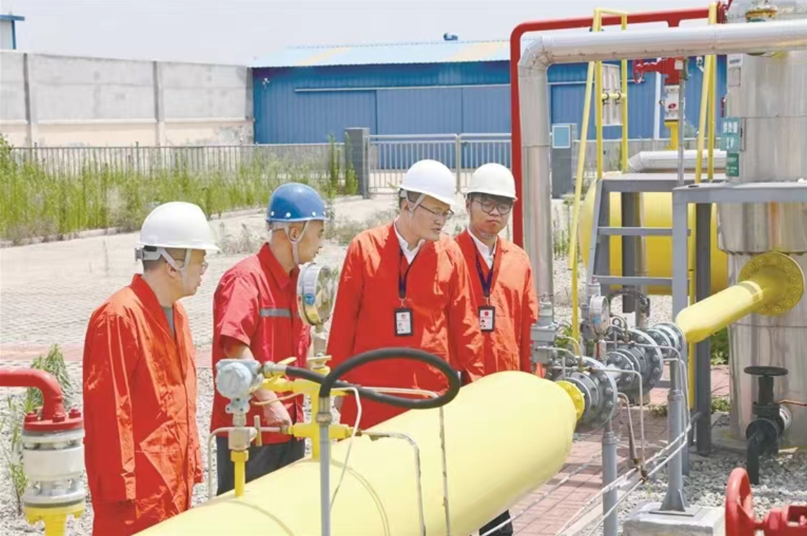

2025年7月24日，《中国纪检监察报》观察版、中央纪委国家监委网站头条刊发文章《山东纪检监察机关以有力监督推动职能部门履职尽责 拧紧燃气安全“责任阀”》。全文如下：
城镇燃气管道设施安全涉及千家万户，事关百姓安危和经济社会发展大局。习近平总书记高度重视城市规划建设和安全生产工作，多次对燃气安全作出重要指示。
2024年3月，山东省委、省政府部署开展城镇燃气管道设施安全治理。山东省纪委监委把这一工作作为政治监督的重要内容，纳入群众身边不正之风和腐败问题集中整治“小切口”，组织全省各级纪检监察机关立足监督的再监督、检查的再检查，跟进监督、精准监督、全程监督，坚决保障相关工作有力有序开展，为人民群众生命财产安全和社会稳定发展提供坚强保障。
走进山东省城镇燃气（管道设施）安全治理工作组会议室，墙上两张挂图格外引人注目。一张是“2024年十大攻坚行动进展情况表”，另一张是“2025年‘八项重点任务’进展情况表”。在今年的进度表上，全省及各市各项任务的整改率、完成率、落实比例等数据一目了然。
山东省燃气行业的特点，可以概括为“点多、线长、量大、面广”。全省城镇燃气用户数量3100万户、管网总里程31万公里，均位于全国前列，化解存量风险、防范新增隐患的压力长期存在。
“燃气安全主要涉及管道天然气和瓶装液化石油气两方面用气安全，包括燃气管道设施、燃气厂站设施、运维管理体系、用户端等4类安全内容。通俗来说，就是从几十万公里的管网设施，到几千万家的‘瓶、管、灶、阀’，都要尽力以万全之策保障万无一失。”山东省住房和城乡建设厅城市建设处处长李晓军介绍，2024年以来，在纪检监察机关的督促下，通过组织企业全面自查、市县评估检查、市级交叉互查、省级抽查，全省共完成21.3万公里市政庭院燃气管道、3600余座厂站隐患排查任务，完成管道更新改造3605公里。
“燃气与供水、供电、交通、通信等关键基础设施共同组成城市生命线，重要性不言而喻。”李晓军表示，无论是隐患排查、更新改造，还是全链条整治、监管职责落实，都离不开职能部门联动、层层传导压力。纪检监察机关的有力监督，进一步强化了责任落实和协调联动。
2024年4月，山东省纪委监委印发通知强调，各级纪检监察机关要切实提高政治站位，立足监督的再监督、检查的再检查，坚持问题导向和结果导向，紧盯主体责任落实和监管责任落实，加强监督检查，严肃执纪问责。
“解决好燃气安全这类民生问题，既是确保习近平总书记重要指示批示、党中央重大决策部署贯彻落实的有力抓手，也是加强政治监督的具体体现。”山东省纪委监委第三监督检查室主任庄斌表示，要盯紧两方面责任落实，一是盯紧主体责任落实，督促地方党委政府把治理作为“两个维护”的实际行动；二是盯紧监管责任落实，督促住房城乡建设、公安、市场监管等职能部门认真履职尽责，强化执法监督，坚决纠治有令不行、有禁不止，做表面文章、敷衍应付等形式主义问题。
“纪委监委要做的是透过业务看政治，就是要善于通过发现党员领导干部在工作履职中的业务问题来透视背后的责任、作风问题，甚至是腐败问题。”庄斌说。
全省各级纪检监察机关结合集中整治群众身边不正之风和腐败问题，将城镇燃气安全作为重点民生实事，加大问题线索调查处置力度，截至2025年6月，共严肃查处腐败和作风问题170件，立案86人，给予组织处理107人、党纪政务处分85人。
“这不是一件容易的事。”山东省纪委监委驻省住房和城乡建设厅纪检监察组组长李臻说道，“从上游气源到下游用户端，燃气使用涉及环节多，安全隐患点位多。整治工作由住建部门牵头，共涉及18家职能部门。横向部门多，容易职责不清、推诿扯皮；纵向层级多，一旦压力传导不到位，就会出现上热中温下凉。难点就在这儿，我们要‘破’的首先也是责任传导问题。”
李臻的深切体会是，要以高效贯通协同的监督体系来保证责任的有效落实。一是强化责任，以压力传导破除部门履职理念惯性。该纪检监察组及时跟进落实上级要求，制定监督方案，督促职能部门以政治眼光审视问题本质，以压力传导穿透责任链，形成“责任压实—过程管控—制度升级”闭环。二是形成合力，以横向协同破除部门履职不畅壁垒。强化“组组”联动，积极与公安、市场监管等部门沟通协调，提升派驻监督的联动性和穿透力，形成监督合力。三是同频共振，以纵向联动破除部门履职不顺弊端。强化“组地”协同，深化条线监督，推行“双派单”工作机制，上级部门与属地单位同步下达任务清单，健全省市县三级联动工作机制，促进整治扎实深入开展。
以“组组”协同监督为例。“黑窝点”“黑气贩”“黑气瓶”流动性大、隐蔽性强，打击难度较大。该纪检监察组紧盯打击“三黑”上游不明气源这一关键点，与驻省公安厅纪检监察组多次沟通会商，加强办案协作、信息共享，推动有效解决跨区域执法难题，深化源头治理。同时，与驻省市场监管局纪检监察组建立沟通协调机制，实现查处燃气用具违规销售生产的信息共享、线索移交。
“这既是破解群众急难愁盼问题的政治任务，也是补齐行业短板的有利契机，必须坚持整体推进，一竿子插到底。”李臻说。
“从诉求内容看，燃气开通不了或维修不及时等业务类占31.3%；燃气使用过程中发现安全隐患占15.3%……”2024年9月，枣庄市纪委监委驻市法院纪检监察组（综合派驻市住房和城乡建设局）向该市住房和城乡建设局党组发出《关于加强燃气领域整治工作的提醒函》，针对群众反映集中的突出问题，作出若干具体工作提醒。
此前，枣庄市纪委监委党风政风监督室联合市群众诉求办理平台分析2024年1至8月全市燃气领域群众诉求1306条，通过“收费、服务、开通、维修、安全隐患”等关键词建模分析，发现问题多发区域为人口密集区域和老旧城区，问题多发类型为燃气开通、燃气服务、隐患整改、燃气收费4个方面，群众反映集中问题为强制推销燃气保险、随意设置霸王条款、安全隐患得不到及时整改等。
“我们据此明确整治重点，及时向住建部门反馈，督促燃气企业尽快整改，真正做到‘群众不满意、监督不收兵’。”枣庄市纪委常委、监委委员王晓勇介绍，该市纪委监委对发现的9起典型问题进行严肃查处，处理处分11人，联合市住建局组织集中约谈2次，“回头看”监督检查2次，切实压实整改主体责任。
“大数据监督帮助我们打开了工作局面。”枣庄市纪委监委党风政风监督室干部徐猛认为，此类监督工作通常会面临一些共性问题：一是靶向问题，如何收集线索；二是监督问题，如何避免隔靴搔痒；三是评价问题，如何让群众可感可及。
“从燃气领域开始，我们尝试运用了双层穿透分析办法，用数据来说话。”徐猛解释道，一方面通过分析群众诉求内容分布，找准焦点、堵点问题，明确监督突破口；另一方面，通过分析群众诉求即时变化情况，评估职能部门整改落实和履职尽责情况，确保监督工作一抓到底、抓出成效。
2024年9月至2025年1月，经过三轮分析、反馈、整改，枣庄市相关问题月均诉求量从317件降至109件，月均诉求满意度从75%升至82%。一升一降背后，是扎实的努力。针对前期群众诉求集中的燃气服务和燃气收费问题，该市纪委监委联合住建部门推动燃气公司提升热线服务质量，增加6名坐席人员，增设3条呼叫线路；对安装施工价格重新核定，户均收费降幅15%。
“燃气公司上门免费更换了‘安全三件套’，我们这片老小区也没落下，非常满意！”家住枣庄市台儿庄区金色花园小区的季先生说。
据枣庄昆仑能源有限公司员工张军介绍，“安全三件套”包括不锈钢波纹管、报警器、切断阀，一旦用户家中发生燃气泄漏，报警器检测到一定浓度，切断阀就会自动切断燃气。此外，新换的物联网燃气表具有流量监测功能，也可以实施二级切断。“对于城市（县城）居民用户，我们每年至少上门安检一次，排查各类隐患，主管部门会对安检情况进行抽查。”
“防患始于未‘燃’，安全重于泰山。”台儿庄区纪委监委相关负责同志表示，该区纪委监委督促区住房和城乡建设局一体推进燃气安全领域“查、宣、改、建”。在入户安检时，向群众讲解规范、安全使用燃气的重要性，对发现的安全问题第一时间落实整改，同时加快建设智慧监管平台，持续开展打非治违，制定出台瓶装液化石油气配送人员“黑名单”制度，全方位织密燃气安全防护网。
搭载高精度激光甲烷遥距仪的电动巡检车在小区内穿行，可实现庭院燃气管道车过即检；搭载检测设备的燃气激光巡检汽车，可实现户外市政道路燃气管网及附属设施的检漏工作……走进淄博华润燃气有限公司，多项燃气安全巡检新技术装备，令人眼前一亮。
5月26日16点37分，该公司监测系统自动弹出一则预警：张店区某物流园发现疑似工程车辆在次高压燃气管线周边施工，并附有一段现场视频。巡检员接到派发工单后，迅速前往现场核实处理。
一直以来，第三方施工破坏是导致燃气事故的主要原因之一，极易造成严重后果。为提高监测预警能力，该公司创新运用了铁塔视频监控系统，通过摄像头的AI自动识别功能，可有效识别第三方未报备施工情况。目前，已布设8台铁塔摄像头，设置85个预置点位，每处点位平均覆盖约3.5公里次高压管线。
“铁塔系统每天巡检约260余次，实现对运行次高压管线全覆盖。”公司总经理和景彬介绍，系统优点是不受天气、交通、人员等因素影响，实现全天候实时监控，更稳定、更清晰、更直观。
“城镇燃气安全是公共安全的重要一环，任何一件小事管控不到位，都可能产生‘蝴蝶效应’，带来严重后果。”在淄博市纪委监委第二监督检查室主任张健看来，“监督的再监督”要盯重点、盯关键，重点盯承担整治任务的责任单位履职情况，以及关键环节风险隐患的化解情况等。
去年4月以来，淄博市县两级纪检监察机关紧盯燃气管道设施隐患排查、燃气管道设施更新改造、燃气用户端整治提升、瓶装液化气打非治违等整治重点，累计开展监督检查、联合督导等81次，发现和推动解决问题203个。针对夏季淄博烧烤业持续升温，张店区纪委监委、临淄区纪委监委督促本区工作组协调相关职能部门，强化对网红打卡地、烧烤聚集区等重点用气场所的督导检查和应急值班。
数据显示，全国液化石油气用户数量约为管道天然气用户的1/5，但前者的事故发生量却超过后者。使用不合格气瓶管灶阀、安装不规范、用气环境不合规等是其中的主要原因。
“过去，送气工为了节约时间，往往放下气瓶就走，留下不少安全隐患。”淄博市住房和城乡建设局党组成员、副局长王大海介绍，“我们全面落实山东省瓶装液化石油气‘统一配送+随瓶安检+信息化监管’模式，开展液化气经营配送集约化改革试点，督促燃气经营企业全面落实国家实名制销售和随瓶安检要求，全力守护用气安全。”
2023年8月，山东齐燃燃气有限公司成立，这是一家专门从事瓶装气统一配送的专业化公司。总经理徐立光介绍，公司已和淄博市9家液化气厂站签订了合作协议，统一配送区域涵盖全市所有区县。
送气工也是安检员，隐患不除不供气。淄博市400余名送气工通过专业化培训上岗，对用户实施“定期入户安检+送瓶即检”。登录淄博市瓶装液化气跨部门综合监管平台，随意点开一条送气安检记录，12项检查内容、5张用气环境照片缺一不可，照片必须明确显示现场的瓶管灶阀安全情况，且附有时间、位置水印。不仅如此，公司还实行“一人一码、一瓶一码、一车一码、人车绑定”，对配送过程全程监控，实现钢瓶全流程数据化保障，确保每只钢瓶来源可追、流向可查、责任可究。
“问题的产生并非一朝一夕，问题的解决也不可能一蹴而就。我们将督促职能部门形成合力，加强对企业的指导、监管，把责任落实到‘最小管控单元’和‘最后一公里’。”山东省纪委监委相关负责同志说。（管筱璞）